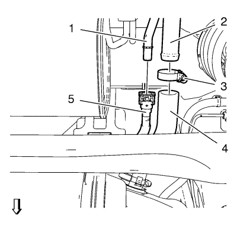

Sustitución del mazo de cables del módulo de la bomba del combustible del depósito de combustible
Herramientas especiales
EN-6015 Tapones de cierre
Si desea informarse sobre herramientas regionales equivalentes, consultar Herramientas especiales .
Procedimiento de desmontaje
Advertencia: Consulte Advertencia sobre la gasolina y sus vapores en la sección Prólogo.
- Desconecte el cable negativo de la batería. Consulte Desconexión y conexión del cable negativo de la batería → sin sistema de arranque/parada.
- Drenaje del depósito de combustible. Consultar Drenaje del depósito de combustible .
- Retire el revestimiento de la pieza trasera del paso de rueda. Consultar Sustitución del forro de la caja de ruedas trasera .
- Elevar el vehículo y soportarlo de manera segura. Consultar Elevación y soporte en alto del vehículo .
- Desemborne el mazo de cables del módulo de la bomba de combustible del depósito de combustible (1) y suéltelo de la carrocería.

- Desconecte el tubo de retorno de combustible (3) del conector del tubo de retorno de combustible (1). Consultar Servicio del adaptador de conexión rápida del collarín plástico .
- Cierre todas las conexiones con tapones EN-6015.

- Desconecte el tubo de alimentación de combustible (3) del conector del tubo de alimentación de combustible (1). Consultar Servicio del adaptador de conexión rápida del collarín plástico .
- Cierre todas las conexiones con tapones EN-6015.

- Desconecte el cierre rápido del tubo de emisiones EVAP (5) del tubo de ventilación del depósito de combustible (1). Consultar Servicio del adaptador de conexión rápida del collarín plástico .
- Cierre todas las conexiones con tapones EN-6015.
- Afloje la abrazadera del tubo de llenado de combustible (3).
- Desmonte el tubo flexible de llenado de combustible (4) del tubo de llenado de combustible (2).
- Coloque un gato regulable adecuado debajo del depósito de combustible.

- Desmonte los 2 tornillos de abrazadera del depósito de combustible (2).
- Desmonte las 2 abrazaderas del depósito de combustible (1).
- Baje el depósito de combustible (2) lentamente y con cuidado hasta que se alcance el mazo de cables de la bomba de combustible (1).
Suelte el mazo de cables del módulo de la bomba de combustible del depósito de los 2 clips de soporte (3).
- Desconecte el enchufe del mazo de cables de la bomba de combustible (1) del módulo de la bomba del depósito de combustible (2).
- Desconecte el enchufe del mazo de cables del filtro de combustible (3) del filtro de combustible (4).
Procedimiento de montaje
- Emborne el enchufe del mazo de cables de la bomba de combustible (1) al módulo de la bomba de combustible del depósito de combustible (2).
- Emborne el enchufe del mazo de cables del filtro de combustible (3) al filtro de combustible (4).
- Fije el mazo de cables del módulo de la bomba de combustible del depósito de combustible (1) con los 2 clips del soporte (3).
- Monte las 2 abrazaderas del depósito de combustible (1).
Precaución:Consulte Precaución con las fijaciones en la sección Prólogo.
- Monte los 2 tornillos de abrazadera del depósito de combustible (2) y apriételos a 23 N·m (17 lib. pie).
- Monte el tubo flexible de combustible (4) en el tubo flexible de combustible (2).
- Monte la abrazadera del tubo de llenado de combustible (3).
- Quite los tapones EN-6015 de todas las conexiones.
- Conecte el cierre rápido del tubo de emisiones EVAP (5) en el tubo de ventilación del depósito de combustible (1). Consultar Servicio del adaptador de conexión rápida del collarín plástico .
- Retire los tapones EN-6015 de todas las conexiones.
- Meta el tubo de alimentación de combustible (3) en el conector del tubo de alimentación de combustible (1). Consultar Servicio del adaptador de conexión rápida del collarín plástico .
- Quite los tapones EN-6015 de todas las conexiones.
- Meta el tubo de retorno de combustible (3) en el conector del tubo de retorno de combustible (1). Consultar Servicio del adaptador de conexión rápida del collarín plástico .
- Enganche el mazo de cables del módulo de la bomba de combustible del depósito (1) en la carrocería.
- Coloque el revestimiento de la pieza trasera del paso de rueda. Consultar Sustitución del forro de la caja de ruedas trasera .
- Bajar el vehículo.
- Conecte el cable negativo de la batería. Consulte Desconexión y conexión del cable negativo de la batería → sin sistema de arranque/parada.
| © Copyright Chevrolet. All rights reserved |